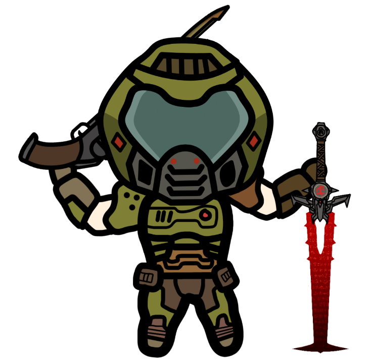

Nosotros
Somos un grupo de entusiastas y fanaticos de Doom comprometidos a compartir nuestra pasion por este iconico juego. Nuestra mision es ofrecer una experiencia completa para todos los jugadores, ya sean veteranos o nuevos en el universo de Doom. Nos dedicamos a explorar todos los aspectos de este legendario titulo: desde sus orígenes hasta sus ultimas entregas, pasando por guias, trucos, historia y mucho mas. A traves de nuestra pagina, buscamos reunir a la comunidad global de Doom para celebrar su legado y mantener vivo el espiritu del juego. ¡unete a nosotros y revive la accion, la emocion y el desafio que Doom ha ofrecido durante mas de dos decadas!